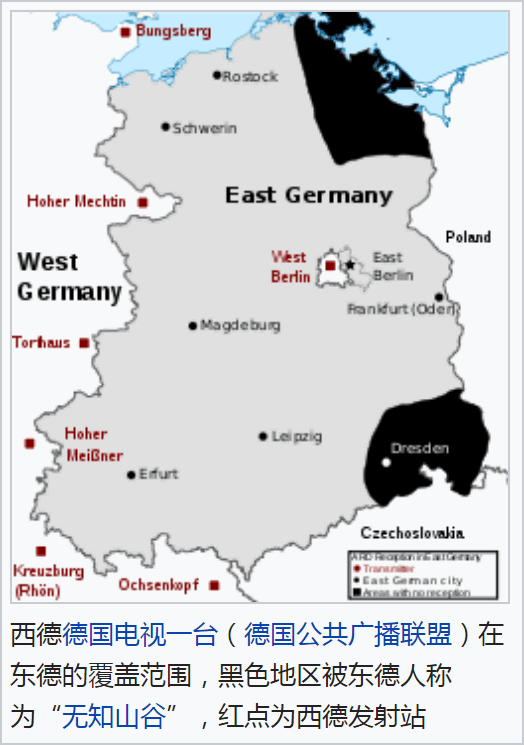

前言
其实是前一篇的后记，因为前一篇素材搜集太多了篇幅太大，就放在这里承前启后。
前一篇结尾提到了阿西莫夫名著《永恒的终结》，一来是其内容涉及到「幕后黑手」也有「死几个人即可维持稳定」情节，二来是其出版时间的1955年刚好是兲朝币制改革，结合应景时事正好能与幕后黑手「色目金融空头」联系起来。
至于《历史の小波分析》，确实是作者硬盘上的一个文本文件，内容罗列如下：
既然“人性”不是永恒的，并且各地道德、风俗都不同。
除了大方向上面的热力学第二定律（也就是所谓“历史唯物主义”）之外，评价一个具体的人在具体历史中的作用还是要看局部。
时域、空域都是局部的分析还是必要的。
在数学上偏偏有这种工具——小波
论文？如果有机会的话，好好写一篇～
这个文件在作者硬盘上存了十几年了，而文件内容则是2001年毕业设计时候的脑洞，当时手写在便笺上，后来录入计算机。
引发脑洞的原因，是毕业设计当中用到了JPEG编码和解码，使用了「Independent JPEG Group」的开源代码。当时新时代JPEG 2000格式已经出现了，不是离散余弦变换而是小波变换，但是那时候无论是浏览器还是操作系统都普遍不支持。技术更新换代，当然有充沛的学术上的理由，所以因为好奇就翻了翻小波分析相关内容。
与此同时，那时候校内能看到的公开出版物如《读者》《青年文摘》之类上面充沛着苏联政治笑话，其中有一条「共产主义如果是科学的话，应该先用耗子或狗做实验才对」。看到了之后首先结合当时的主流价值观「辩证唯物主义是科学，有科学家运用唯物主义背书」就联想到「历史唯物主义是不是科学呢」。
当时还没接触到其它引进出版物，还不知道「历史不是科学而是诗学」这种观点，仅仅从专业角度出发，按照业内「一门学科成熟的程度与其运用数学的程度呈正比」的观点，判断「即便历史被定义为科学，也相当不成熟」，所以就形成了这段手写感想。
摘抄
东德广电事业
德意志民主共和国境内的电视台和广播电台受国家控制。民主德国广播电台是自1952年到德国统一期间东德的官方广播电台。东德官方的对外广播电台是柏林国际广播电台。然而，西方电台和电视台的信号可以容易地在东德境内接受到。西柏林的美国占领区广播电台（RIAS）亦是专门为东德听众制作节目的电台。
东德的国家电视台是民主德国电视台（1990年后更名为德国电视台），建立于1952年，下分两个国家级电视台：DFF1台和DFF2台，德国统一后此两台变为地区性的电视台：中德广播公司（MDR）和柏林-勃兰登堡广播公司（RBB）。
对于收看西德电视节目的家庭，房顶的电视天线角度会有所不同。在20世纪50年代到60年代，这些收看西德电视节目的人往往会被爱国的邻居或是自由德国青年团员告发。然而80年代后当局容忍了收看西方电视节目的行为，甚至允许带有既接收东德电视节目又接收西方电视节目的大型天线和有线电视存在。东德电视台亦制作了《黑频道》等节目应对东德居民普遍收看西德节目的现实，但收效甚微。据莱比锡青年中心统计，从1976年到1988年每天只看西德电视年轻人比例从14%提高到了56%。

无知山谷
无知之谷（德语：Tal der Ahnungslosen）是东德的一个讽刺词汇，指的是东德东北格赖夫斯瓦尔德以及东南德累斯顿区无法接受到西德甚高频广播及电视讯号的地带。经审查后播出的东德媒体是当地居民获取信息的唯一方式，这一地区的居民占东德人口的15%。
该名称主要得名于德累斯顿盆地（英语：Dresden Basin）附近的易北河山谷地形。
虽然字面上该词主要代指的是德累斯顿易北河山谷，但东萨克森和西波美拉尼亚也被包含在内。
另一个讽刺词汇是将德国公共广播联盟的缩写ARD拆解为“除了德累斯顿地区”（Außer Raum Dresden）或“除了吕根岛和德累斯顿”（Außer Rügen und Dresden）。
科恩和海恩穆勒（Kern，Hainmueller）在2009年通过研究史塔西档案得出的结论是，相较能够接受西方媒体讯息的地区，不能收到西方媒体的地区对政治体制更加不满。作者认为西方媒体主要被东德居民当作娱乐消遣，而非用作质疑东德政权，这降低了东德居民日常生活的枯燥感，使东德的共产政权更加稳定。
现在这一词汇在德语中有时也会被用作指代德国东南部宽带因特网连接不畅的地方。
注：在《设定集》当中会出现新角色「范硁然」，也是作者个人博客主页上面列出的「曾用名」之一，构思时就是由于这段典故设定为来自易北河山谷，顺便碰瓷我中华兲朝上国那发达的伦理学传统当中的教条，也有砥砺奋进七八年来以「郭春海」为首的色目情报掮客追着我喷「小人」并吹捧包括但不限于伤寒马力在内的一票钦定主角龙傲天为「君子」的典故，在《恶补记》当中都多次强调了这种「言必信行必果硁硁然」的行为准则。
素材
耍钱的朋友们奔走相告
19:27:32【伊朗国家货币由里亚尔改为土曼】据伊朗多家媒体报道，当地时间4日，伊朗议会投票通过《伊朗货币和银行法》修正案，该修正案将官方货币“里亚尔”（Rial）改为“土曼”（Toman）。 新法案要求伊朗中央银行在考虑货币储备和对国际货币基金组织承诺的情况下，以“土曼”重新计算汇率。法律还明确规定，“里亚尔”将与“土曼”一起保持两年的信誉，在此期间，将逐步收集旧硬币和钞票，并用新硬币和钞票代替。据了解，新的货币换算将变成1万里亚尔兑换1土曼。（央视新闻）
18:56:40 华谊嘉信被问询，要求说明公司2019年在营业收入明显下降的情况下，实现扭亏为盈的原因及合理性。
18:50:59 瑞银将富国银行评级下调至卖出。
18:48:40 截至当地时间5月4日8时，根据瑞士联邦公共卫生部最新数据，瑞士和列支敦士登公国共有新冠肺炎确诊病例 29981例，24小时新增76例，累计死亡1477例。（央视新闻）
14:31:44【伊朗官方货币变更为土曼】伊朗议会4日批准，伊朗官方货币由里亚尔变更为土曼，1土曼相当于10000里亚尔。伊朗议会当日投票通过《伊朗货币和银行法》修正案。修正案要求伊朗中央银行在考虑货币储备和对国际货币基金组织承诺的前提下，用土曼重新计算汇率。根据修正案，土曼将在两年内逐步代替里亚尔。在此期间，政府将收集旧硬币和钞票，并用新硬币和钞票代替。（新华国际）
08:46:29【三星宣布经营权不传子女 爷孙三代家族式管理告终】据韩联社报道，三星电子副会长、三星集团实际掌门人李在镕6日就集团内部禁忌话题主动开口，宣布不会让子女继承经营权。报道称，这意味着，从创始人李秉喆到李健熙会长再到李在镕的爷孙三代家族经营血缘继任模式告终。（海外网）
22:43:27 三星监督委员会回应称，其认为三星电子副会长、集团实际掌控人李在镕的致歉声明“很有意义”。李在镕直接提到“将不会继承给孩子”，这相当于直接打破韩国传统财阀体系的根本特征。（一财）
匿名岛夷
伊朗币制改革伊朗换货币了
一万块旧的货币换一块新的
这是想借此缓解通货膨胀?
相当于国内一百元换一分钱
上次还能用一奋钱买东西是什么年代( ﾟ∀。)
( ´_ゝ`)伊朗挺住啊
我最后一次用一分钱，是一九九九年，四线城市的郊区，1根钉子。
伊朗之前就是双货币| ω・´)
法币改金圆券？
1955年币制改革，旧人民币1万元兑新人民币1元
俄罗斯不是也干过吗，但很快就失败了
朝鲜也干过，结果很惨。这种大规模货币改革，不要太乐观
印度最近几年也干过吧，现在好像没声音了，是完成了吧
斯大林（Starlink）还没破产か？我记得阿三不是改货币是取消旧版大额面值货币并发行新版货币，还是卢比只是换钞而已，汇率不变
星链还没破产呢？
美国“星链计划”可媲美5G 却会带来天文学大灾难干扰天文观察同时还制造了一个全球监控网络和造谣的信号播放平台，类似于当年谷歌那些人背着信号广播走街走巷。。。然后。。某国被推翻了。
跟5G竞争？或者替代5G？猪脑子二货想出来的吧
更方便美国靠假新闻和美国宣传机器洗脑别人罗
想一想，4万个基站能覆盖多大的地方？这个星链计划，应该是对国际海事卫星的补充吧……
马斯克还有得钱砸，每年发个几百颗也不贵
我在推上关注的一个天文博主每天除了发抓拍到的流星就是发这玩意飞过的延时照片，那真的是一挡挡一片
啥负面影响？逼迫拆防火墙？
往太空扔垃圾
现在他们都快反向建墙了，还怕这个( ﾟ∀。)
严重影响天文观测
占轨道，影响我国空间战略发展，产生大量太空垃圾
这是主站的一篇文章，讲星链对星空观测的危害，单在太空轨道上就占用了大量本就不多的空间。前几天美国马氏集团还在高喊封锁停业是FXS，而资本正把人类仰望的天空纳入它的增殖系统中，代价却是大量望远镜的数据作废。等他吹的三万卫星就位(而且这批卫星还会在数年内退役)，对人类的太空观测简直是毁灭性的
四万两千颗“星链”闪耀 虚假星光带来天文学大灾难
透支太空空间，时间一到就是难以处理的垃圾堆
以后人类做了个大火箭去探测太阳系外，会不会刚出大气层就爆炸了，跟飞机撞鸟一样
就卫星那通讯能力。。。
之前那个什么不就是资金链断了破产了吗？ 卫星是一次性的 以后技术升级很麻烦
做天文观测的恨不得杀了马斯克的ma
( ^ω^)
和5G战你马呢？卫星信号上网速度能超过5G我现在就给麦克斯韦烧纸
|-` )星链这东西简直是太空垃圾
卫星通信效率能有陆基高?( ﾟ∀。)真当从天上牵根线下来啊
我比较好奇这种卫星怎么有这么高的反光，为什么以前发射的那么多各种卫星都没有影响观测的报道？
我觉得星链只不过是另一种形式的棱镜门罢了
这对全世界都会产生负面影响的项目居然还在实施，就NM离谱。
中国那个天眼是不是基本废了| ω・´)
| ω・´)哪天我们跟阿美闹掰了，可以把它们打下来吗
入轨后打了能不能完全下来都两说 可能会碎成好几块继续在轨道上飘着
我马上要去天文所的小哥们整天跟我们骂马斯克|ー` )，说以后基本告别地面观测了
刚刚从斗鱼胖五直播间出来，弹幕有人狂吹马呢
有的，这个主要是因为在低轨道，而且数量极大，超过了人类发射卫星数量的总和，以前的例子就是铱星计划，因为数量少所以没有太大影响
技术确实强，这个得承认，但改变不了他是美国资本家的事实
技术强那也是NASA的事啊
这事得看美军意思了
星链未来大概率也是美军的全域作战的一部分
数量多 传输成本低 防打击能力强
马斯克对NASA真是个宝
我觉得还是得靠专业人士提防了(;´Д`)
有篇科幻小说叫闭锁时代，是我一个朋友的处女座，投了科幻世界，我突然有点担心这样的世界成真
摘：
“还有在太阳同步轨道上的高景侦查卫星、美国的锁眼侦察卫星、以及数不清的你们发射上去的商业遥感卫星……还有更高轨道上的GPS、北斗、伽利略导航卫星，总之，在2000公里以下的高度上，几乎所有卫星都被摧毁了，没有被摧毁的卫星也即将被摧毁，尤其在400km到900km的范围内，目前碎片的密度已经达到了平均任意垂面内每平方米每秒27.5个，并且还有快速增加的趋势。不但不可能再发射新的卫星——因为一旦进入那个高度层就会被瞬间击毁，而且在35786km高度上的通讯卫星也因为下面碎片的阻挡已经彻底失效了。航天产业即将死亡。”
“可能你们还不知道发生了什么，我来告诉你们”博士说道，“你们的家长们创造了这个世界上最大的工业奇迹，在近20年时间内，全世界的商业航天工程师们在资本的诱惑下，共向各类轨道上发射了超过百万颗各类卫星，不断增多的服役的或失效的卫星数量就像一个不断吹大的泡泡糖，而就在昨天，这个泡泡糖被吹爆了，破裂的不断封住了我们的嘴，也遮住了我们的眼睛，孩子们，我们被闭锁在地球上了啊！”
“从今往后的几百年里”一位眼睛哭得红肿的老人补充说道，他是中国首位也可能是最后一位因天体物理方面的发现获诺贝尔奖的科学家，是类星体、河外星系研究领域的权威。
“从今往后的几百年里，从现在开始的几十代人，将再也看不见真正的星空。轨道上的那些卫星碎片反射的光线产生严重的光污染，挡住了那些来自宇宙深处的属于真理的光芒。你们将经常可以看到天上有很多快速移动的光点儿，就想你们想象中的星星一样，但孩子们，请你们记住，那不是真正的星星，那些光点儿，是人类创造的闪着光的枷锁，禁锢了人类的翅膀，闪瞎了人类的眼睛，人类对宇宙的探索就此止步了。这将是比工业革命造成的雾霾对星空的封锁更加彻底，比经济危机造成的破产对星空的漠视更令人绝望的灾难。”
草，他们面前发射了多少颗，该不会现在地面上肉眼可见的星星都是这玩意吧(´ﾟДﾟ`)
目前发了多少忘了，反正最后组网一共是42000颗( ´_ゝ`)
不是，这尼玛往太空倒不可回收垃圾就没其他国家出来反对？
4w2的卫星 一天十颗也得发射十多年吧( ﾟ∀。)
虽远必诛の强汉之龙裔必应已被击毙地面基站的普及程度与成本绝对比这个四万多卫星划算吧……
当年摩托罗拉不是搞过铱星计划么……怎么记吃不记打，随便立项就能赚钱了吗
https://pittsburgh.cbslocal.com/2020/05/04/ross-township-apparent-murder-suicide/
记得以前有个人调查希拉里邮件门还是什么的，回家之后突发精神病，枪杀自己全家后一把火连房子带自己一起烧了个干干净净。( ﾟ∀ﾟ)
CNN称新冠病毒去年底已开始在全球传播看了下NBC的新闻，说他是被打了两枪，一枪打头一枪打颈。枪手身份和动机未明。
华为回应QQ偷偷删除图片 ：不一定是恶意行为基本上越来越往军运会带到武汉这个逻辑上来了，很多事情都能解释清楚了
军运会各国带回自己的国家，然后基本上全球同期爆发，武汉最早发现最早检测。
美国选手军运会排名35，而且期间有去武汉医院发烧的纪录，极度诡异。再加上新泽西州一个市的市长确认11月份得的新冠，新泽西州就在马里兰州隔壁，马里兰州就是那个关闭德特里克堡生物实验室的州。
腾讯QQ回应称，华为手机拦截并保护的图片是QQ内的临时缓存图片，保存在系统相册的照片并未被删除。目前正在与华为EMUI方面协商优化体验，“QQ绝不会删除用户主动保存的任何照片和文件”。
QQ在声明中表示：“QQ在保存文件时，在某些安卓机型中会先创建临时空文件，用于测试当前系统是否正常。真正保存图片时，会把刚才临时的空文件删掉，再写入真正的图片。华为拦截的是删除这个临时空文件的行为。”
针对手机上的图片莫名丢失的情况，华为手机产品线副总裁李小龙在5月6日回应称，某些应用的确会自动删除手机上的图片。他解释，这不一定是恶意行为，很多应用会自动清除过期图片。
李小龙称，华为在EMUI9.0上增加了图片视频删除保护功能，只要有第三方应用删除了常用图库目录下的照片或视频，就会在通知栏提醒用户，并且能在图库回收站内恢复刚删除的内容。如果第三方应用不想让缓存图片被用户在系统图库下看到，应该按照安卓规范在该缓存目录下添加.nomedia属性，这样缓存图片就不会被系统扫描到。
李小龙必秒张小龙
|∀ﾟ问题来了，这俩要是打官司会去那里打，谁赢
可以参考微信和华为关于指纹支付的斗争
怎么那么多小龙
打不起来，你看那个回应，华为在指责qq程序员连安卓规范都遵守不好
缓存图片能不能按照安卓系统规范，放到/cache里( ^ω^)
国际化大都市「华语第一精日论坛」
马斯克出售名下所有房产，价值3950万美元罗斯福如果没有死在任上，还能连任第五次吗？上周五，马斯克发推特表示，准备出售自己所有的有形资产。“我正在卖掉几乎所有的有形资产，”他在推特中写道。“我将不再拥有房子。”
根据美国房产信息网站Zillow上的信息，5月4日，马斯克挂牌位于洛杉矶贝莱尔地区的两处房产，均为业主直接出售，总要价是3950万美元。
这两套房子都在洛杉矶的圣莫尼卡山上，就是GTA5里市区北边的山景豪宅区
顺便马斯克的新女友今天为他生下了他的第六个儿子，前五个儿子为前女友所生
说起来有点敏感，政治领袖个人的存续和政策存续是有关系的，人亡政息才是古来真理
尤其在大的变革，转型的时候更是这样，领导人素质尤为重要。罗斯福的时代美国第一次建设起了集权的中央政府，第一次如此深入介入到世界事务的时代而且还在打一场世界大战，他当选对美国是好事儿，但转型完成后还继续掌权就不一定了。
多任一次的话，至少全民医保能够在美国普及（效果怎样另说，至少覆盖面上会有全民普及的形式），而且金融保险业也会吃顿重拳
说实话，罗斯福的对苏战略一直被人批评软弱，考虑到冷战即将开始，如果罗斯福不改的话，有点悬啊，继承罗斯福意志的副总统华莱士在罗斯福死后出来选总统，被驴象两党联手做局，得票率不到百分之二被踢出局，就算是本人来，也不会有多大改变吧
大善人的对苏构想是大国合作，对第三世界而言，这是比冷战还不妙的东西。在冷战格局下，尚有选择的可能，在大国合作格局下，有成为一家奴才且被大国互作赠礼的危险。
瞎猜一下，丘吉尔在战后没有连任首相，所以我觉得不一定
你是事后诸葛亮
罗斯福时代是支持苏联的。因为当时目标是拆解英法世界殖民体系
美苏这方面是盟友
比如以色列这颗钉子 但是就是美国出钱 苏联出人 大批苏联红军犹太士兵直接加入以色列军队
同感
而且胖丘这个坏心眼能挑起冷战，换小罗在，即使不是总统至少也是个聪明人，冷战发生可能性会减少，或者推迟，历史就不一样了
戴高乐也被赶下台了啊
没死的话很可能推动全面就业法案，全部工作国家包分配，要不然46年杜鲁门那个就业法还不好说
美苏一开始也没有积极对抗，大家都忽略了五十年代到底谁最起劲，那就是搅屎棍牛牛。
铁幕演说也是丘吉尔说的。
直到苏伊士战争，美苏联手把英法按下去了才标志着霸主地位换人了。
下面有人说了，美国当时要收拾的首要对象不是苏联而是英法旧殖民体系，为美国霸权扫清障碍，英国也是被怼得受不了才搞了铁幕演说转移美国视线。
罗斯福不改，正好和斯大林不谋而合，至少能维持一段稳定的G2时期，这种世界线里，英法会更惨
当然两个人身后美苏大概率还是会撕破脸的
有些人把铁幕的降临想的太缓慢了，其实快的像闪电一般，就是短短两三年的事儿。
1947年杜鲁门援助土希的“国情咨文”就已经宣布彻底敌对了，你看他的措辞，严厉苛酷的不留丝毫余地：“全世界每一个民族都必须在两种生活方式之中选择其一。一种生活方式是基于多数人的意志，其特点为自由制度，代议制政府，自由选举，个人自由之保障，言论与信仰之自由，免于政治压迫。第二种生活方式基于强加予多数人头上的少数人意志。它所依靠的是恐怖和压迫，操纵下的报纸和广播，内定的选举和对个人自由之压制。”
丘吉尔是不怎么体面的下台的，英国人当时几乎疯狂的憎恨他。虽然战争时人们感谢英雄领袖，但和平降临英雄的存在就好像不停的提醒你那些苦痛过往一样。。。
当然马上开三战的话肯定能连任
只要罗斯福不死，根本没人能动他的政策，美苏合作一来可以打击老欧洲，二来可以瓜分世界。
肯定比两权对抗鱼死网破好。
只是在这种大背景下，没有其它国家崛起的可能，特别是TG。
谈不上憎恨，只能说厌烦了吧。
问题并不是二战的“苦痛过往”，过去虽然苦痛但也赢了，大家只想歇了，丘吉尔还在不停的聒噪“不能歇，要继续不怕牺牲跟更邪恶更强大的敌人斗争到底”。
斯大林在东欧政府选举问题上撕毁的正是当年对罗斯福许下的承诺。
当然这是斯大林居于心理弱势不得已的自保行为，我发帖讨论过。
但是指望罗斯福就会对斯大林的公然毁约无动于衷？别忘了罗斯福可是历史上破天荒提出“必须无条件投降”的狠角色。
他的政策留下来了，法国相对完整的军工体系和本土核力量又没废。
所以会像肯尼迪那样被刺杀吧？
他对银行家大资本家太狠了。
论阴谋家，罗斯福的实力最低也至少不在斯大林之下，把罗斯福当成大善人，那真是死都不知道怎么死的。罗斯福不死，苏联未必能打出冷战的神开局（相对于苏联原本的地位和实力而言）。
罗斯福拆法国殖民地的刀子都捅下去了，因为老蒋被大家熟知的那个杜威，他儿子就是在越南当美国越盟联络官结果不明不白的死在西贡的。只不过万万没想到，罗斯福死了就一个半月，杜鲁门这个XX就来个了180度大转弯，改为支持法国在印度支那的殖民存在。
金融业早搞过了
现在美国证券法基础还是1934年证券法。。。。
丘吉尔本来就是废物点心，全靠自传吹逼
丘吉尔本身就是废物
别这样啊，丘吉尔再怎么废物，也是一个心里明白知道自己抱大腿坚决不投降的废物，总比法国好吧……
苏联哪里神开局了。。。他在东欧的扩张再顺利，比得上苏美关系重要吗?
苏联在短短四年之内让美国掀起了杯弓蛇影歇斯底里的反共高潮，这种外交失败不亚于当年的昭和日本了。
“什么满洲，比得上日美关系重要吗？”1931年山本五十六斥责欢呼“满洲事变”胜利的军官。
邱胖除了吹牛就是在搞笑，英国人仇恨他太正常了。邱中堂这个比蠢到什么地步，我告诉你，要是三德子再晚一个月对法进攻，邱中堂就要指挥大军攻打苏联了。
国内居然真有比尔盖茨疫苗阴谋论的信徒没罗斯福还有华尔街什么事。倒不如说肯尼迪遇刺很大原因是罗斯福继任者对华尔街的妥协
https://www.bilibili.com/video/BV1uK411j7H8/
这个up名字叫：DrLiTian 上传的全是各种阴谋论，而且发了很多奇怪的文章。该不是某个邪教的吧？